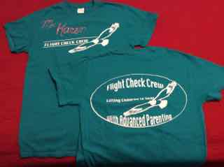

Karen's Week at Healing Hearts Camp
Link Here to read more about Healing Hearts Camps


This is the project for my course in Web Design. I took a study break to help my friends Melissa and Scott with their Healing Hearts Camp. Here are a few highlights!
Purpose of Healing Hearts Camp
Healing Hearts Camps were designed by Nancy Thomas to provide an opportunity for families who have
challenging children to get support from camp staff while learning and applying new parenting techniques.
Parents are given tools to put themselves back in charge of their family. They learn about the overwhelming drive
for a sense of safety that drives many challenging behaviors. The tools they learn and practice quickly give their
children assurance that they have a parent that they can trust to keep them safe.
Staff - The Flight Check Crew
 The Flight Check Crew is integral to the design of a Healing Hearts Camp. We all got to wear these cool shirts which identified us clearly to parents and children as being trained in using the tools they would be taking back home with them. Our staff included camp veterans and first-timers, young and seasoned, therapists and Moms. All of us worked tirelessly, trying to catch up on sleep, and pitching in with whatever Nancy, Melissa, and Scott needed us to do.
Families
Twelve families joined us for this camp. Several of these families included adopted children who
had already been through a variety of programs and were still needing help so their behaviors would not
be tearing their adoptive family apart.
One family brought their adoptive son from overseas and
another had packed up their west coast home, come to IL camp, and left afterwards for their new home in Hawaii.
All of these families were ready for change and left camp with more loving, respectful, and safe children.